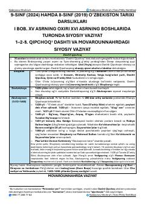

9O9-sinf O'zbekiston tarixi fanidan milliy sertifikat imtihoniga tayyorlovchi qisqa qo'llanma.
Ushbu qo'llanma 9-sinf O'zbekiston tarixi darsliklari asosida tuzilgan bo'lib, XVI asr boshlaridagi siyosiy vaziyat, Shayboniylar va Temuriylar sulolasi hamda Zahiriddin Muhammad Boburning hayoti va faoliyatiga oid ma'lumotlarni o'z ichiga oladi. Material tarix fanidan Milliy sertifikat imtihonlariga tayyorlanuvchilar uchun mo'ljallangan.